第1课时｜45分钟
女装设计 III · 第07周
第07周｜春夏系列策划
春夏系列不是五张效果图，而是一个可穿、可做、可选择的系统。
把第06周的三个元素家族编辑成五套造型与明确产品结构。
季节条件 → 系列角色 → 产品矩阵 → 5套阵列 → 2套实物候选
春夏系列参考｜Dolce&Gabbana 2026春夏成衣同一系列 5套造型｜品类分布对照
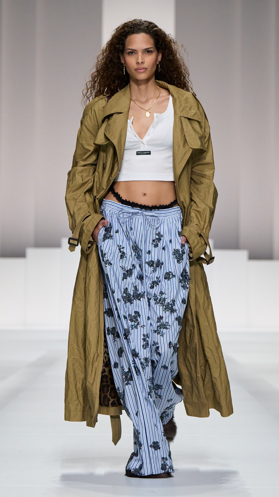
01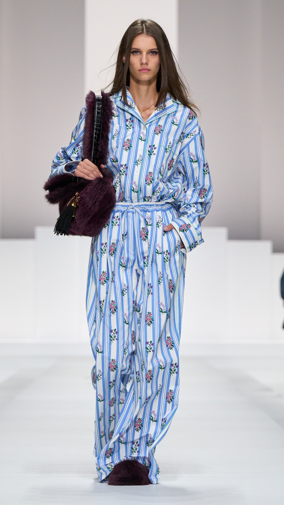
02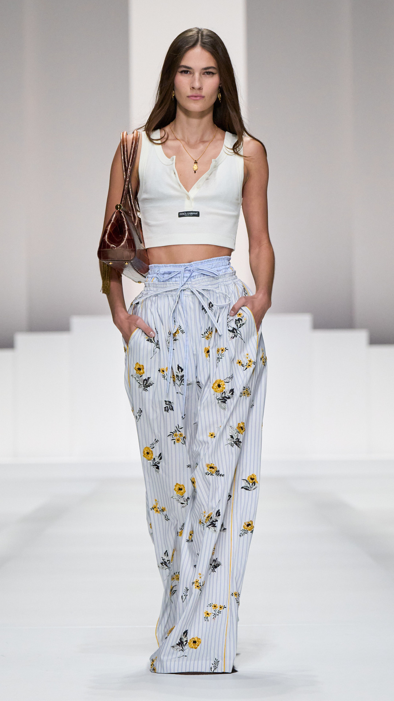
03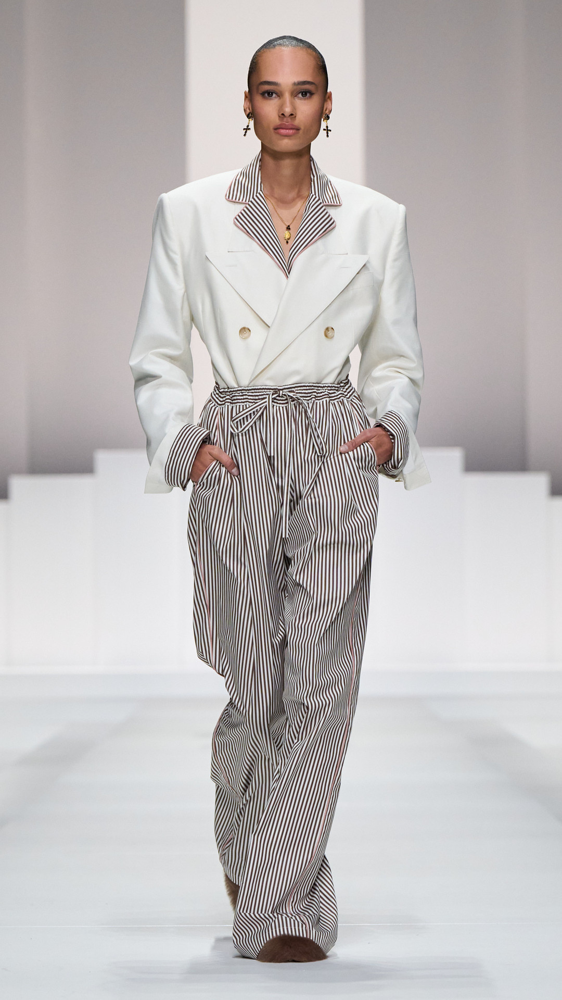
04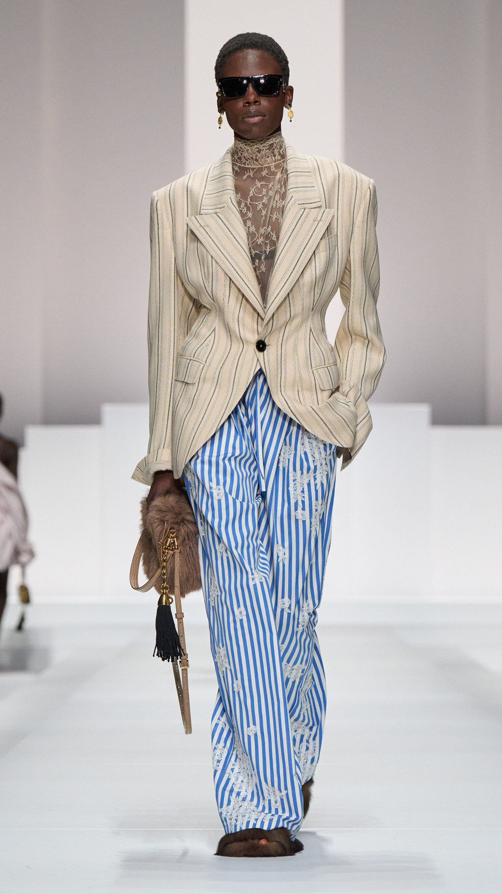
05图像：Dolce&Gabbana 2026春夏成衣（米兰时装周，2025年9月）｜来源：品牌官方发布 dolcegabbana.com｜课堂选取5套用于季节条件与品类分布观察，不代表品牌官方系列结构。
常量｜同一条条纹长裤五套里有四套穿同一类条纹长裤。一条裤子撑起整个系列——这就是“重复单品”。
变量｜上装换，下装不换风衣＋背心（01）→ 同料衬衫（02）→ 背心（03）→ 短外套（04）→ 西装（05）。
变量｜覆盖面积露腰（01·03）→ 全覆盖（02）→ 半覆盖（04·05）。春夏的体感差别就落在这一项上。
角色｜梯度02 入口（一套成立、最好卖）；05 高潮；01·04 发展；03 轻量转折。
十六周课程路径女装设计 III · 第07周 · 第1课时｜45分钟
十六周不是孤立主题，而是一条连续的设计证据链
前8周建立方法并完成中期验证；后8周深化春夏与秋冬系列，最终独立完成主题系列与答辩。
01–04判断与定位
05–08提取与验证
09–12季节系列开发
13–16独立项目与考核
已完成本周后续
第1课时｜45分钟
女装设计 III · 第07周
03 学习目标
今天要完成春夏五套系列编排V1
每套有角色，整个系列有节奏和制作优先级。
第1课时节奏衔接与导入6′季节与架果7′案例与教材证据12′实操20′
季节
把温度、湿度、日照与维护写进材料和结构。
交什么：一页春夏条件表，每条写出对应的材料或结构决定。
架构
分配开场、中段、收尾和商业入口。
交什么：五套的角色标注，每套一句“它为什么存在”。
产品
规划单品数量、交叉搭配与重复单品。
交什么：产品矩阵一页，标出重复单品和空缺品类。
选择
确定两套差异明确的实物候选。
交什么：两张候选卡，各写清它要验证的那一个问题。
学情大二，已完成第01—06周，能交出分解板与三个设计家族。当前三个普遍困难，本周已分别用页面给出对照：把五套按“好看程度”排序而不是按角色排（见“五套五种任务”）；五套品类互相重复、矩阵出现空格（见“系列案例 B”的五个品类零重复）；两套实物候选难度相同、验证同一个问题（见“课堂实操”的不合格条）。 教学重点给每套写出“它为什么存在”，并让重复单品把五套连成产品系统。 教学难点两套候选必须验证两个不同的问题，且难度要拉开。
第1课时｜45分钟
女装设计 III · 第07周
第06周→本周
今天不从零开始——上周的三个家族，就是今天五套的角色来源
第06周回答“如何有规则地改变元素”；本周回答“把这些变化编成一个能卖、能做的系统”。
上周带来的
今天变成
在哪一页用
3个设计家族
五套里的角色梯度：入口／发展／高潮／转折
五套五种任务
12个二维变体
40张快速草图的起点：先扩到40，再编辑回12
1课时检查
6个立体测试
两套实物候选的依据——哪一套已经证明做得出来
两套候选
不变条件（两条）
贯穿五套的设计密码，强度可分配但不可消失
代码强度分配
分解板上的失败证据
中期风险清单的第一批条目
第08周 Gate 2 预告
术语衔接第06周的“不变条件”在本周叫“设计密码”——同一件事，换了工作位置：上周它是“改变时不能破坏的东西”，本周它是“五套之间保持一致的东西”。
开场 3 分钟摊开第06周带来的三样：分解板、3个家族的说明、6个立体测试的记录照片 → 第06周一句话小结写的“它形成了 ______ 家族，并将在春夏系列中承担 ______ 角色”，把那两个空抄到今天第一页 → 今天全程用这三个家族，不新起主题。
第1课时｜45分钟
女装设计 III · 第07周
04 春夏条件
春夏不是少穿几件，而是重新处理身体触点
本地的真实条件：室外 35℃ 以上、湿度高、室内空调 24℃——一天之内要跨过 10 度温差。
热
通风、遮阳、排汗和贴肤面积。
验证：抬臂和快走一分钟，看腋下、后背哪里先闷。
湿
干燥速度、黏附感与透明变化。
验证：喷水后看布面变不变透、多久干、贴不贴皮肤。
光
透视、反射、防晒与色彩稳定。
验证：拿到窗边逆光看一次——很多浅色布在阳光下会透。
转换
户外高温与室内冷气的层次。
验证：五套里至少两套要能加一层，加完不能变得笨重。
维护
高频清洗、易皱、收纳和耐用。
验证：揉成一团再展开，看皱痕多久消失。
第1课时｜45分钟
女装设计 III · 第07周
05 系列概念
系列编排不是把五张图排在一起
共同规则和角色差异必须同时成立。只有其中一样，出来的都不是系列。
看似系列
- 同一人物模板和配色
- 每套复制同一装饰
- 没有产品与难度计划
- 五套换的只是长度或颜色
真正系列
- 共享2—3个核心代码
- 强度、产品和身体距离变化
- 能说明每套为什么存在
- 删掉任何一套，系列都会少一项任务
两个都要过：①遮住四套只看一套，能不能认出属于这个系列？②五套并排，能不能一眼说出谁和谁不同？
只过第①条＝五套太像，是复制；只过第②条＝五套太散，是拼盘。
第1课时｜45分钟
女装设计 III · 第07周
06 角色分配
五套造型，五种任务——没有一套是来凑数的
角色可以调整，但不能五套都做同一件事。删掉哪一套，系列就少了哪一项任务？
造型 01｜开场
最清楚地宣布主题和轮廓，第一眼就要让人看懂你在做什么。
造型 02｜入口
最易理解、可穿、可购买。这一套决定系列有没有市场。
造型 03｜发展
把核心元素扩展到别的品类，证明规则不只适合开场那一套。
造型 04｜转折
改变比例、材料或身体距离，避免中段三套读起来一样。
造型 05｜收束
实验强度最高的一套，同时回响开场，给整组一个记忆点。
检查：逐套问一句“删掉它，系列少了什么”。答不出来的那一套，就是重复的。
第1课时｜45分钟
女装设计 III · 第07周
07 系列案例 A
前三套压住，后两套放开——这就是节奏
五套共享同一个轮廓关系，差别几乎全部由色彩承担。
同一系列 5套 · 共同代码与角色差异看共同代码与角色差异
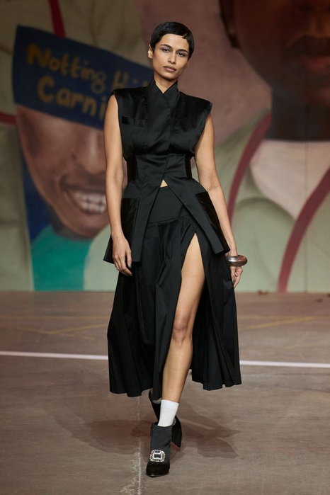
01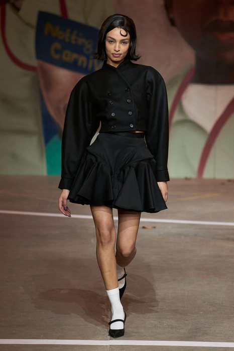
02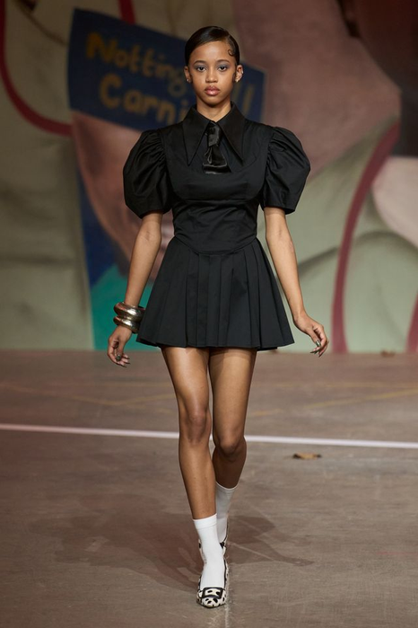
03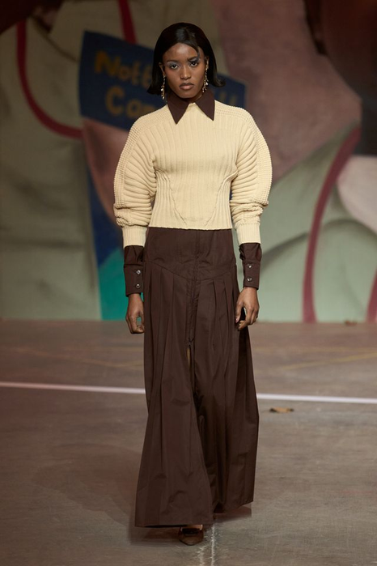
04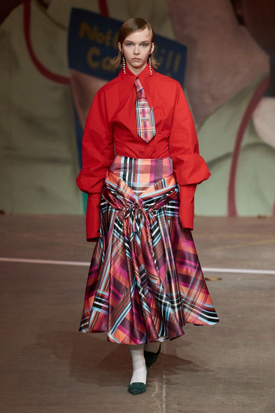
05常量｜上紧下张五套都是“上身收紧 + 下摆张开”的同一个轮廓关系，一次都没有改过。
变量｜色黑（01·02·03）→ 米＋棕（04）→ 红＋格纹（05）。前三套故意压平，把力气留到最后。
变量｜领口立领 → 双排扣 → 蝴蝶结 → 尖领 → 领带。领口是唯一每套都改的地方。
角色｜梯度01 开场；02·03 入口（可单穿）；04 转折（唯一的长裙与暖色）；05 收束（最强）。
课堂回答：贯穿三套以上的设计密码是哪一条？如果把 05 挪到第一位，前面四套还压得住吗？
来源：课程 2026–2027 教学资料库｜用途：仅用于“共同轮廓关系与色彩承担差异”的观察；品牌、系列与年份待开课前核实后补注
第1课时｜45分钟
女装设计 III · 第07周
08 教材证据
先搭产品骨架，再画最终效果图
教材给了一张真实品牌的女装夏季产品结构表——设计从这张表开始，不是从效果图开始。
 01
01先数品类，再画图。衬衫 12 款、连衣裙 18 款、半裙 7 款、长裤 5 款——先定每个品类做几款，再决定它长什么样。
基本款多于形象款。夏季 88 款里基本款 52、形象款 36。换算到你的五套：形象款最多两套。
上装多于下装。衬衫＋T恤＋外套合计远超裙与裤——因为一条裤子要配好几件上衣。重复单品就是从这儿来的。
观察任务：照这张表给你的五套列一遍——几件上装、几件下装、几件连衣裙、几件外搭。哪一格是空的？
来源：于芳《服装设计基础与创意实践》（中国纺织出版社，2023），第122页，表7-1。图像按教学需要裁切局部，未改变原始比例。第15周会用同一张表回头核对你的比例。
第1课时｜45分钟
女装设计 III · 第07周
09 复杂度
每套单品越多，不代表设计越完整
复杂度是成本，不是优点。五套加起来，要能在第08周之前做得完。
低
2件；清楚的商业入口。
放在引流款上——它要证明系列能被理解，不需要证明难度。
中
3件；交叉搭配与层次。
放在发展和转折上——层次变化在这里发生。
高
3—4件；承担结构实验或高潮。
整个系列最多两套。超过两套，中期评审就交不出实物。
警戒
所有造型都高复杂度会导致制作失控。
五套全高复杂度的结果不是“更完整”，是两套都做不完。
第1课时｜45分钟
女装设计 III · 第07周
10 教材证据
春夏的材料证据有两层：选什么，和把它改成什么
左边是选来的材料，右边是被改造过的材料。春夏尤其需要第二层。
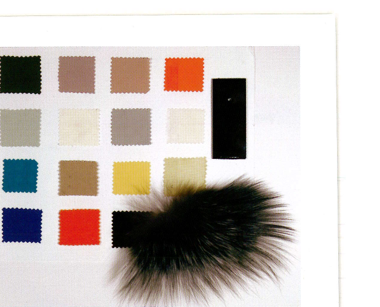
01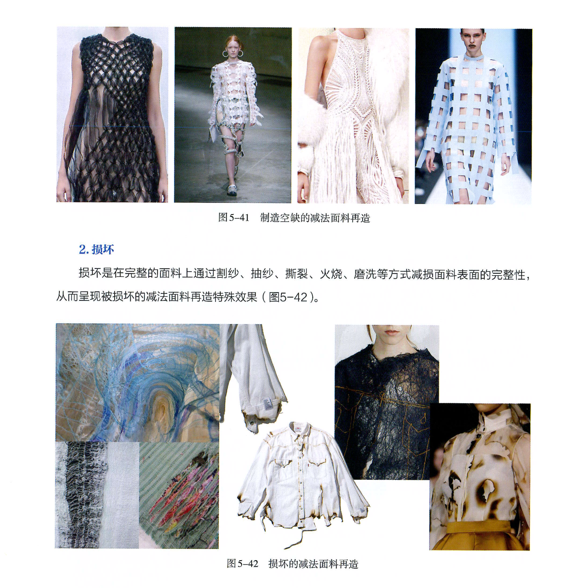
0201 色彩与材料板：色卡按明度分组，深色只占最下面一行；橙、红、蓝这些强调色都只有一小块。旁边压着一块皮草——颜色和材料必须一起看，同一个米色在平纹布上和在毛皮上不是一回事。
02 图5-41／5-42 减法面料再造：割纱、抽纱、镂空、烧灼，教材把它们归为“减法”。对春夏来说，减法就是通风——每一个洞既是装饰，也是散热口。
记录要写数值：克重、透光、悬垂长度、拉伸回复秒数。“手感清爽”不是记录。
观察任务：你的五套里，有没有一处开口同时解决造型和体感？只解决其中一个，就还没到春夏。
来源：01 Steven Faerm《The Fashion Design Course》（Quarto Publishing plc），第52页；02 于芳《服装设计基础与创意实践》（中国纺织出版社，2023），第80页。图像按教学需要裁切局部，未改变原始比例。
第1课时｜45分钟
女装设计 III · 第07周
11 代码分布
设计密码要分配强度，不是每套都贴一遍
出现太少＝不成系列；每套一模一样＝复制。下面的次数是可核对的下限。
怎么核对：五套并排，逐条代码数出现次数。数不出来，说明那不是代码，只是某一套的细节。
留白那一套：不是“随便做的那套”，而是有意降低强度的那套——它让其余四套显得更强。
第1课时｜45分钟
女装设计 III · 第07周
12 系列案例 B
五套五个品类，没有一个重复——产品矩阵就该长这样
背景和配件都不变，你能看到的差别全是品类差别。
同一系列 5套 · 品类分布对照看品类分布
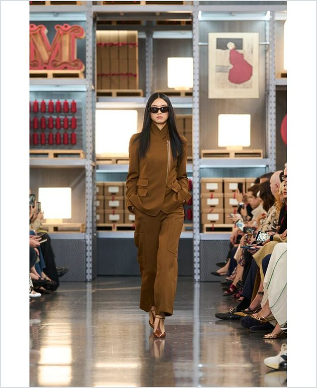
01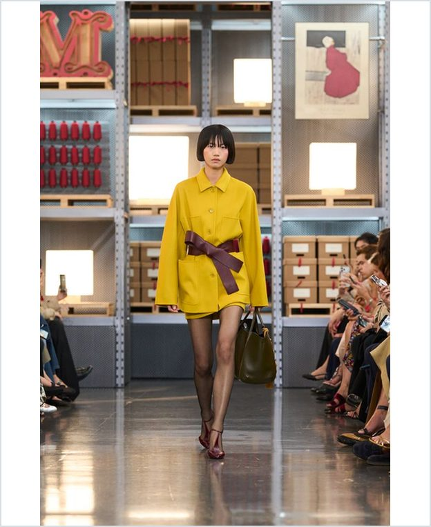
02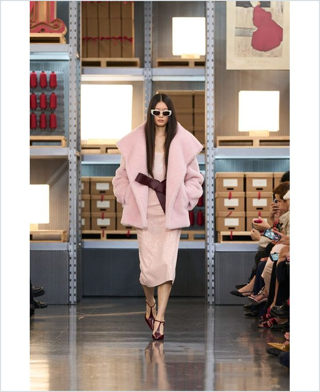
03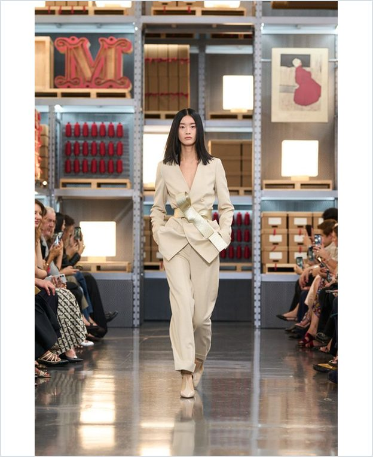
04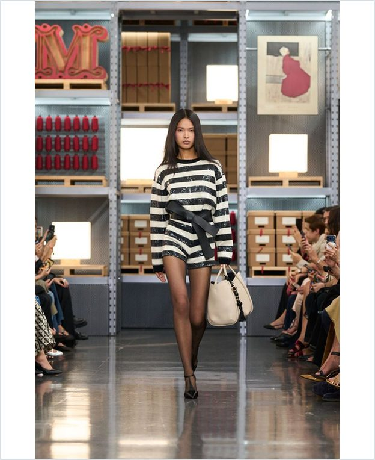
05常量｜场景与配件同一片货架背景、同一类手袋。背景不变，观众才能直接比较品类。
变量｜品类裤装套装 → 衬衫式连衣裙 → 大衣＋半裙 → 西装套装 → 针织连衣裙。五套五个品类。
变量｜色彩面积棕 → 黄 → 粉（上下同色）→ 米白 → 黑白条纹。每套只允许一个色彩事件。
角色｜梯度03 高潮（粉色最强）；01·04 入口（最可穿）；02 发展；05 收束（用图案收尾）。
课堂练习：把这五套填进产品×代码矩阵，再把你自己的五套填进去。哪一张表的空格更多？
来源：课程 2026–2027 教学资料库｜用途：仅用于“五套五个品类零重复”的产品矩阵观察；品牌、系列与年份待开课前核实后补注
第1课时｜45分钟
女装设计 III · 第07周
13 1课时检查
20分钟：40张快速草图先编辑到12张
先看系统关系，不做效果图细化。
输出：12张同尺度草图，背面写家族、产品和角色。
不合格：草图尺度不一，或背面没写来源家族——没法比较的草图，编辑环节用不上。
交接第2课时：带着这12张进入五套编辑。少于10张就没有可删的余地，编辑会变成硬凑。
第2课时｜45分钟
女装设计 III · 第07周
第2课时｜45分钟
从方案数量进入系列编辑
编辑与矩阵8.5′ → 实操26′ → 讲评8′ → 评价·预告与收尾2.5′
第2课时｜45分钟
女装设计 III · 第07周
15 五套编辑
从12张候选到5套系列编排
编辑本身就是设计能力。
排序先做，去重后做。顺序定下来，重复的两套自然会挨在一起，一眼就看得出来。
补缺不是补画。先看矩阵哪一格空着（品类？角色？身体距离？），再决定补什么。
“存在理由”写不出来的那一套，就是要删的那一套。五句话都写完，编辑才算结束。
第2课时｜45分钟
女装设计 III · 第07周
16 交叉搭配
重复单品让系列成为产品系统
重复不是偷懒。同一条裤子出现在三套里，系列才有产品逻辑——封面那五套就是这么做的。
核心上装
至少进入2套，改变下装与层次。
例：一件衬衫，配长裤是入口，配长裙是发展。同一件，两个角色。
核心下装
与不同上装形成两种角色。
例：一条条纹长裤贯穿三套，上装每次都换。开发量减一半，系列反而更整。
外层
连接室内外温度转换。
本地一天要跨 10 度温差，外层是春夏系列里最被低估的一件。
变化件
承担实验强度，不要求高频重复。
它不必重复，但要能和核心单品搭得上——搭不上的实验件，是孤立的。
检查：数一数五套里一共有几件不同的单品。超过 12 件，第08周之前做不完；少于 8 件，系列会显得单薄。
第2课时｜45分钟
女装设计 III · 第07周
17 系列平衡
商业入口与实验高潮必须共存
两者共同证明设计系统具有范围。
检查左边：把入口造型的价格说出来。说不出，它就还不是入口。
检查右边：把高潮造型的核心代码指出来。指不出，它只是“做得复杂”，不是高潮。
比例：五套里入口至少一套、高潮最多两套。全是入口＝没有立场，全是高潮＝做不完也卖不掉。
第2课时｜45分钟
女装设计 III · 第07周
18 实物候选
两套候选要证明两个不同的问题
别只选最喜欢或最复杂的。难度一样的两套，等于只验证了一次。
Zomer · 同一系列 5套看制作难度差
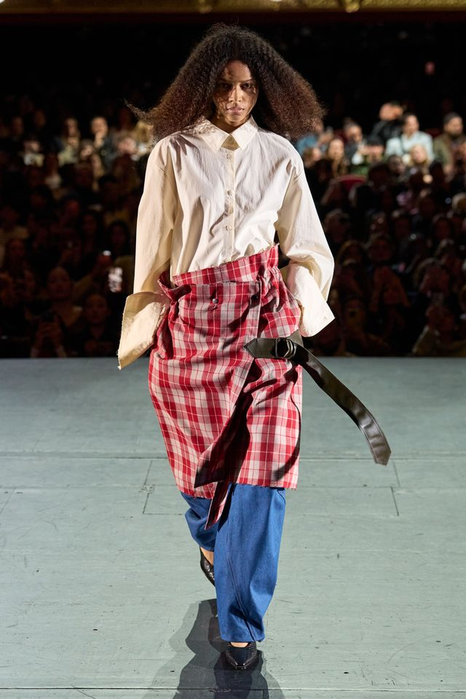
01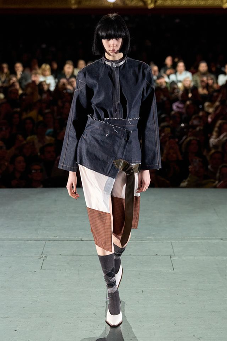
02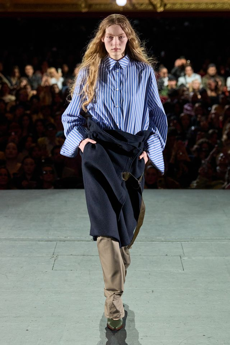
03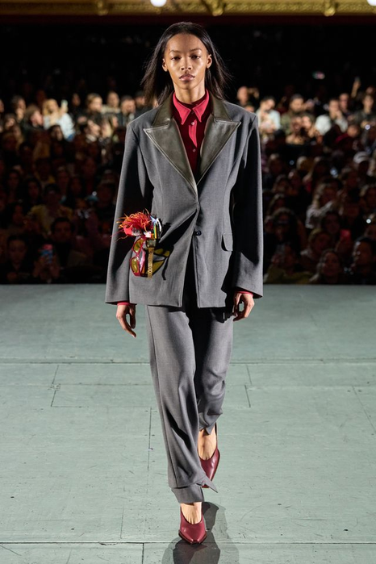
04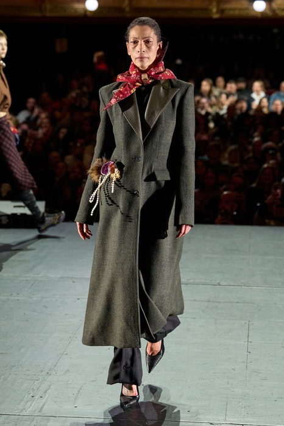
05常量｜“系在身上”五套都有一块布被裹、系或搭上去，不是缝死的——这是贯穿全场的手法。
变量｜制作难度拼接裙（02）最难 → 包裹（01·03）中等 → 西装（04）与长外套（05）是常规工艺。
变量｜身体关系遮住腰（01）→ 露出腿（02）→ 缠在胯（03）→ 完全包住（04·05）。
选候选就看这两行一套证明结构（02 或 04），一套证明穿着入口（03 或 05）。难度不能一样。
课堂回答：如果只能做两套，你选哪两套？说出各自要验证的那一个问题。
来源：课程 2026–2027 教学资料库｜用途：仅用于“两套候选各自验证不同问题”的观察；品牌、系列与年份待开课前核实后补注
第2课时｜45分钟
女装设计 III · 第07周
19 系列矩阵
一页矩阵同时检查六类关系
效果图下面的信息要标准化——五套用同一套字段，才比得出来。
角色
开场 / 入口 / 发展 / 转折 / 收束，五套各占一个，不重复。
怎么用：先填“角色”和“产品”两列——这两列填完，材料和色彩基本就定了。
“风险”那一列不能空。写不出风险，说明还没想过怎么做，中期评审第一个问的就是它。
第2课时｜45分钟
女装设计 III · 第07周
20 课堂实操
26分钟：完成五套春夏系列编排V1
所有造型使用同一尺度和正面站姿。
输出：5套阵列 + 系列矩阵 + 两套候选卡。
不合格：五套尺度或姿态不统一；矩阵“风险”列留空；两套候选难度相同。
交接第08周：这三样就是中期评审的入场券，缺一项当天无法开始评审。
第2课时｜45分钟
女装设计 III · 第07周
21 同伴讲评
系列讲评只做四个动作
每个反馈必须落到一套造型或一个矩阵格上。说不出落点的意见，先记下但不照改。
保留
哪套最清楚地证明主题？
要指出是靠哪一条代码证明的，不是“感觉最好看”。
移动
哪套位置改变后节奏更好？
说出移到第几位，以及移完之后开场和收束分别变成谁。
修改
哪套需要调整产品、比例或强度？
三选一：改产品构成、改比例、改代码强度。不要一次提三样。
删除
哪套与其他造型功能重复？
如果删了，矩阵会空出哪一格？空出的格子由谁来补？
第2课时｜45分钟
女装设计 III · 第07周
23 形成性评价
第07周检查：系列是否可进入中期实物验证
不看五张图漂不漂亮，只看系统能不能工作。四项全部成立才进入第08周。
判定线：“成立”＝别人能自己指出证据；“部分成立”＝要你解释才找得到；“需重做”＝解释了也找不到。
本周成果按平时成绩（40%）计分，并直接进入期末六项标准中的“市场与定位”和“统一与丰富”两项（共 40 分）。
第2课时｜45分钟
女装设计 III · 第07周
24 第08周准备
第08周是 Gate 2：从主题到身体证据的完整链条
带齐文件与实物，缺一项当天就无法判断——不是扣分，是评不了。
系列
五套阵列V2与矩阵。
不合格：不合格：V2 与本周 V1 完全一样——说明一周里没有吸收任何反馈。
图纸
两套候选的前后平面图与关键细节。
不合格：不合格：只有正面图；关键结构没有放大细节。
实物
白坯样衣或关键部位全尺寸样。
不合格：不合格：只做了平面裁片，没有上身或上人台——那不叫实物验证。
证据
前侧后、动作、材料与修改记录。
不合格：不合格：只拍站姿。抬臂、坐姿缺一项即视为未验证。
第2课时｜45分钟
女装设计 III · 第07周
一句话小结：系列中的每一套都必须有任务
“我的五套系列通过 ______ 代码保持一致；其中候选A验证 ______，候选B验证 ______，第08周我最需要暴露的风险是 ______。”
01五套春夏阵列V1
02系列矩阵
03两套候选卡
04中期风险清单
课后查阅｜教学补充
女装设计 III · 第07周
期末评价连接
本周成果将进入同一套六项终期评价
平时训练不是零散作业，而是期末系列的证据积累；本页依据《25级〈女装设计〉考核大纲》期末实践考试评分标准（满分100分）。
10分
时代性与创意
主题回应当下，并形成自己的问题与立场。
10分
趋势性与元素
提炼的设计元素与当季趋势、审美和来源一致。
20分
当代女性适配
款式回应身体、动作、场景与真实穿着需求。
20分
整体造型美感
比例、色彩、材料与细节共同形成完整造型。
20分
市场与定位
顾客、价格、品类和使用情境边界清楚。
20分
统一与丰富
风格统一，同时具有角色、搭配与造型变化。